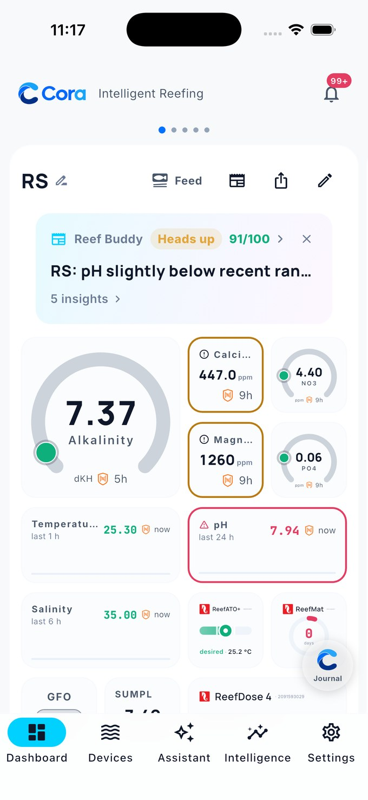
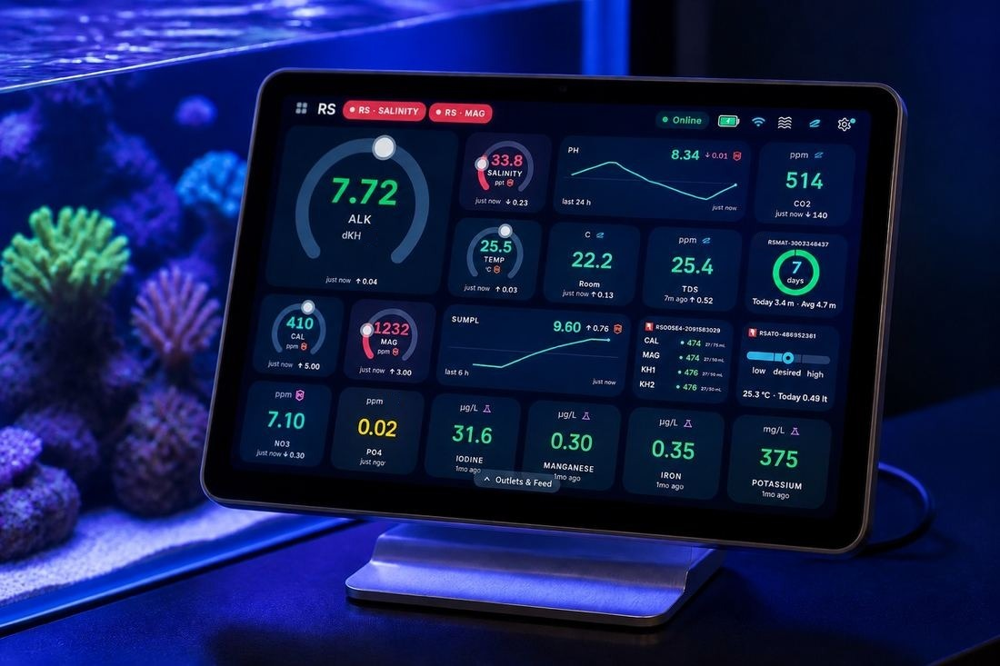
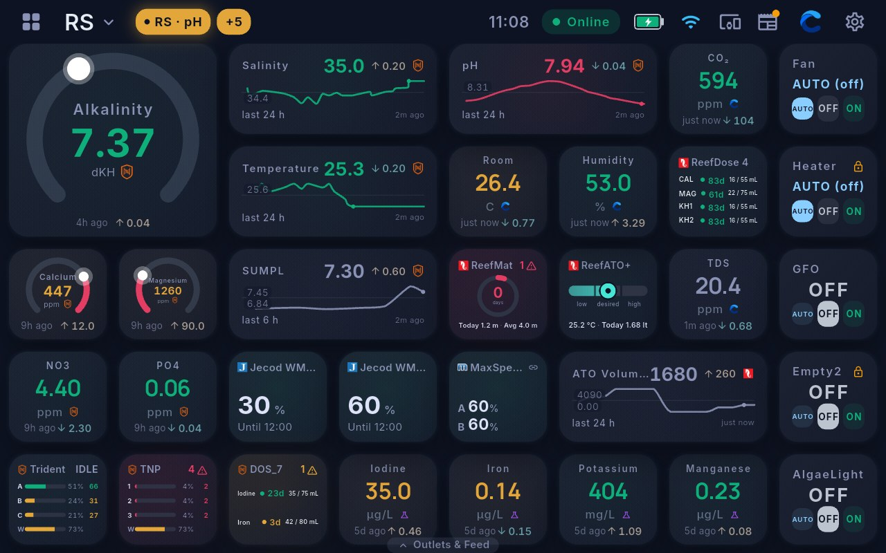
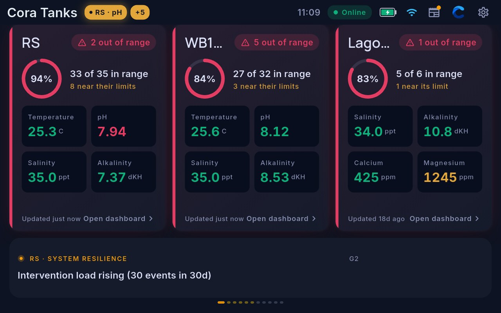
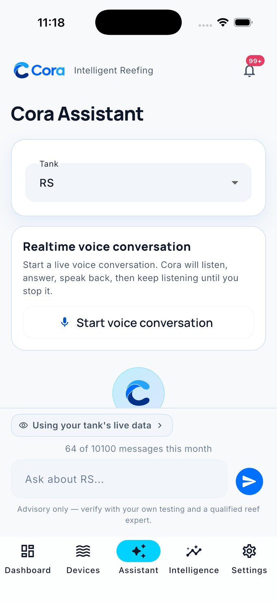
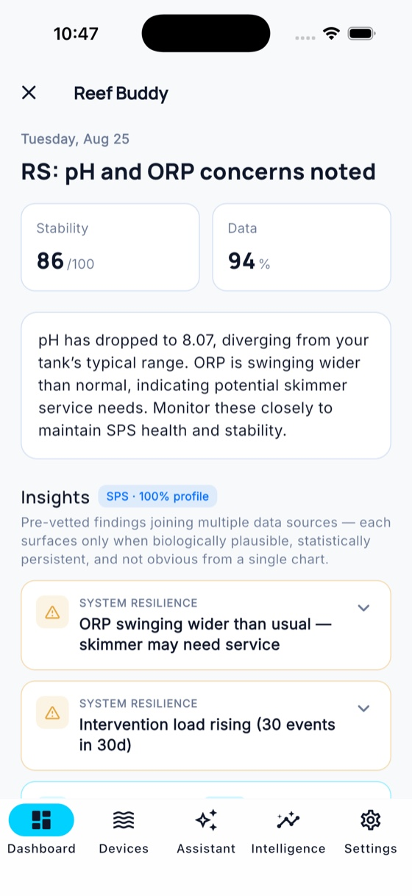
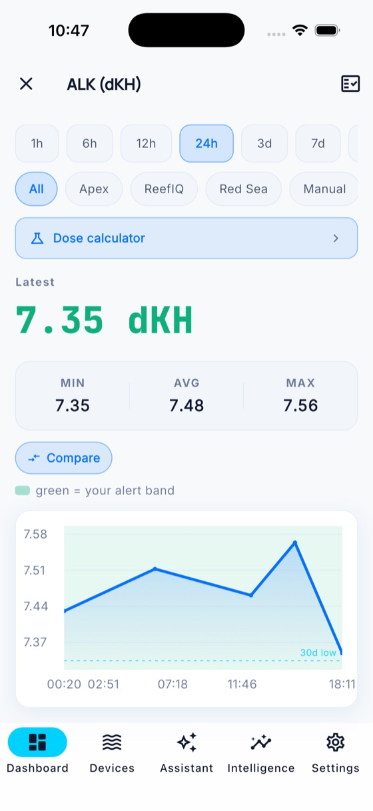
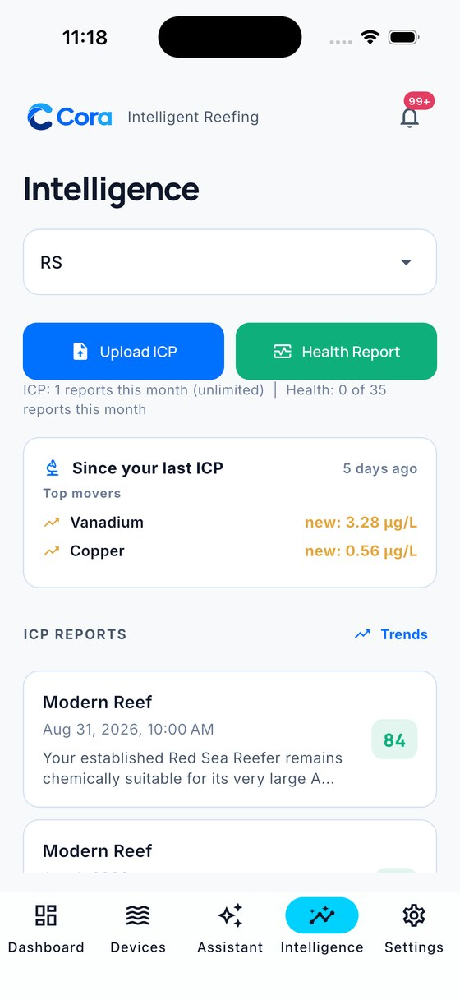
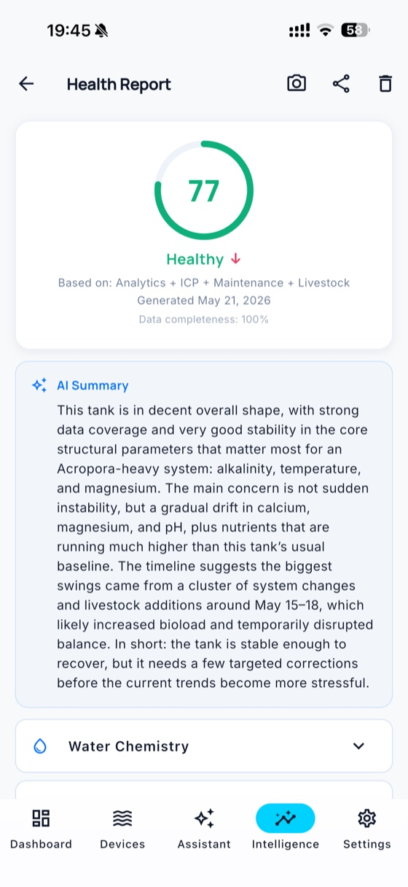
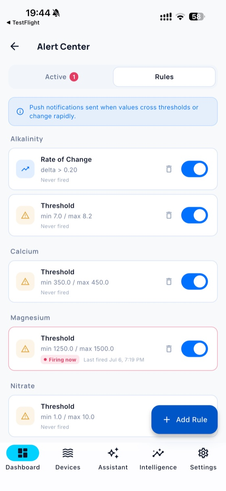

Your controller, your test kits, your ICP reports, and years of tank history — connected into one evidence-backed understanding of your reef. Know what changed, what it may mean, and what to check before you react.

Before a reading changes your plans, Cora checks it: is it fresh? did the source change? is the probe behaving normally? does an independent test agree? Only then does it interpret — against your tank's baseline — and recommend the safest next step.
Every important finding arrives as a Decision Card: the evidence, the uncertainty, the next step, and what not to change yet. And after you act, Cora checks the data again — and tells you whether it worked.
Cora connects telemetry, manual tests, ICP reports, equipment, livestock, and journal — then tells you what the evidence supports, and what it doesn't.
Now in beta: before a number changes your plans, Cora checks it — freshness, probe behaviour, calibration history, and whether independent tests agree. Nothing surfaces on a single odd reading.
Every morning, a short plain-language brief on how your reef is doing. Often it's simply "nothing needs your attention today" — and it's exactly one notification a day, never a stream.
Build the dashboard you actually want — gauges, live charts and one-tap controls, every reading coloured against your target ranges, every source on one timeline.
Upload a report from any lab and get element-by-element analysis against your own tank — lab-neutral, with no bottles to sell you. And when you re-test, Cora tells you whether what you did worked.
Ask by text or live voice. Answers are grounded in your tank's actual evidence — and it shows you what it remembers about your reef, erasable in one tap. Nothing is shared until you say so.
Rules you write, safely carried out — switch an outlet, run a feed cycle, dose within hard caps. Test any rule before it's live, and every action is recorded as done, dispatched, or refused — honestly.
Thresholds on any parameter, evaluated in the cloud so they fire even when your phone sleeps — plus warnings before a dosing container, top-off reservoir or filter roll runs dry.
Track coral, fish, and inverts; log doses, water changes and observations — by keyboard, camera or voice — and see how what you did lines up with what actually changed.
Core features are free forever, export is always free, and you can delete everything at any time. Your reef's history belongs to you.
One intelligence, two places to live with it — on the wall beside the reef, and in your pocket everywhere else.
The wall-mounted command center for the reef room. Every tank side by side on a 10-inch touchscreen, live gauges and trends, full device control — and hands-free voice: say "Hey Cora" and it answers from your tank's own data, then acts on your word. It keeps itself updated overnight.
Your reef in your pocket — iOS and Android. The daily Reef Buddy check-up, reading confidence, ICP intelligence, the assistant, journal and livestock, automations, and control of your gear at home or away.
The whole tank room in one small puck. It reads the air your reef lives in — CO₂, temperature, humidity — learns your infrared remotes to run aircon and heaters, connects Cora's wireless sensors and switches, and keeps your tank reachable from anywhere.
A large-format touchscreen that puts your whole system on the glass — live multi-tank dashboard, gauges and trends, full device control, and hands-free answers from the Cora Assistant. Mounted by the tank, always on, always in sync.



Cora connects to the equipment already on your tank — reads it, understands it, controls it — and never touches its configuration.
Every Apex probe and module on the same timeline as your tests and ICP — Trident results included. Switch outlets, run feed cycles and start water tests, from the app, the Cora Max, or by voice.
ReefATO+, ReefMat, ReefDose and ReefRun — found on your network automatically. Monitor and control them at home or away, with faults you actually see and supply warnings before anything runs dry.
Wavemakers and return pumps — flow, wave modes, feed mode and daily schedules, beside everything else on your tank.
Gyre flow and its day schedule, in the same place as your pumps, your dosing and your parameters.
Remote control routes through a Cora device on your tank's network. Cora's integrations are independent — not affiliated with, endorsed by, or sponsored by any equipment manufacturer.
Connect your devices over local Wi-Fi for instant control. Sign in and your tank profiles, parameter history, and assistant conversations follow you everywhere — securely, through Cora Cloud.






Cora works for the reefer — not for an equipment brand, a test lab, or a supplement line.
Our own AI reef expert, grounded in your tank's evidence — parameters, livestock, equipment, and journal. It tells you what it can conclude, and what it can't. Advisory by design; you stay in control.
Secure, encrypted sync for your tank data, history, and notifications — protected in transit and at rest. And if you ever step away, your data comes with you: export is free, forever.
We never sell your data and never steer you to products. ICP reports are read lab-neutrally. Personalized mode is opt-in, and you can export or permanently delete everything at any time.
Connect your controller or log your tests — Cora builds your tank's baseline and delivers its first Decision Card. Your reef, understood.